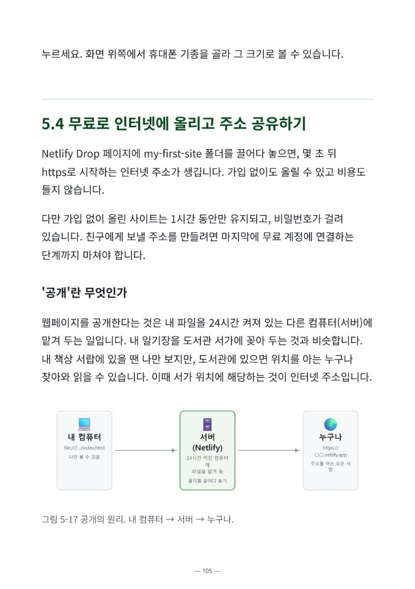
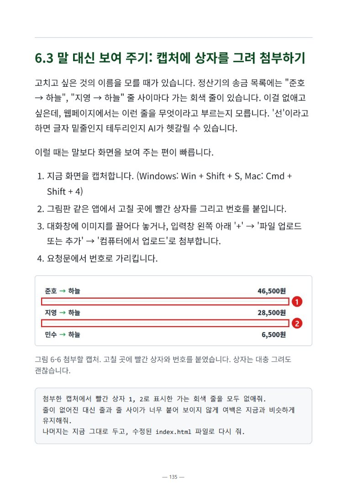
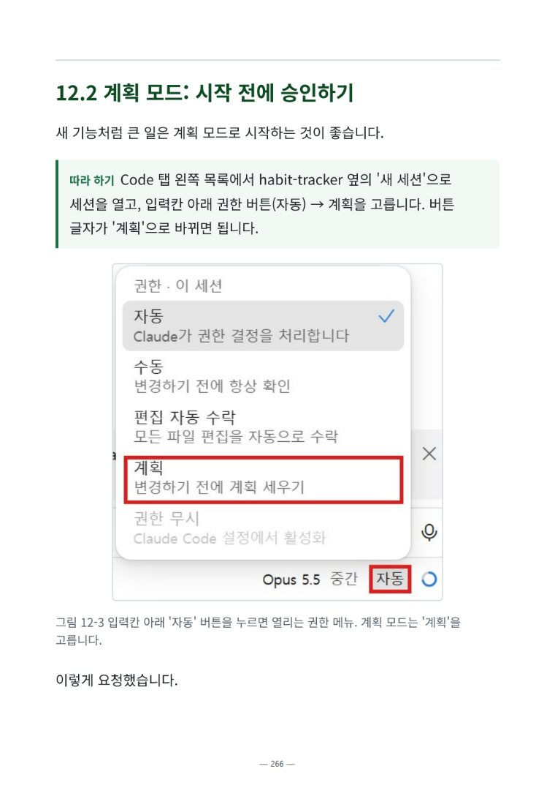
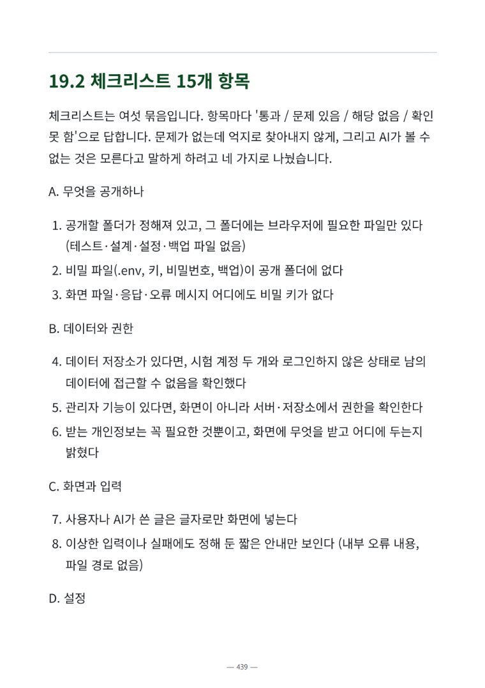
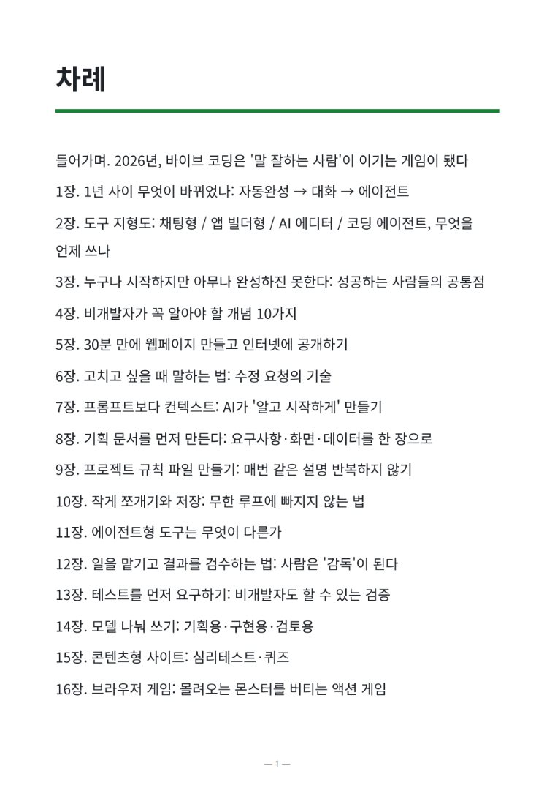
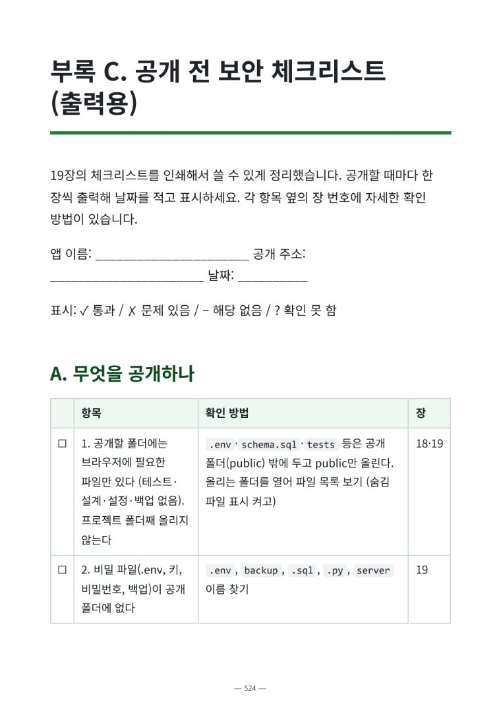

비개발자 바이브 코딩 · 입문편
만들다 멈춘 그 앱,
이번엔
끝까지.
코딩을 몰라도 괜찮아요. Claude 앱 하나로
기획부터 인터넷 공개까지, 한 단계씩 따라 하면
친구에게 보낼 내 링크가 생겨요.
AI 덕분에 시작은 10분이면 돼요.
그런데 끝까지 만들어 공개한 사람은
생각보다 많지 않아요.
고치다 엉키고, 망가지고, 어디서부터 다시 해야 할지 몰라서요.
이 책은 그 지점을 넘어가는 순서를 알려 드려요.
첫 결과물 · 5장
30분이면 내 웹페이지가
인터넷에 올라가요
이론부터 배우지 않아요. 모임 N빵 정산기를 먼저 만들어 Netlify에 무료로 올리고, 친구에게 주소를 보내 보는 경험부터 해요.
- AI에게 보내는 첫 요청문을 그대로 따라 쓰기
- 내 컴퓨터에서 열어 보고, 무료로 인터넷에 올리기
- 휴대폰으로 열리는 내 주소 만들기

수정 요청의 기술 · 6장
"좀 더 예쁘게" 말고,
이렇게 요청해요
고칠 때마다 다른 곳이 망가진다면 요청에 재료가 빠진 거예요. 어디를, 지금은 어떤지, 어떻게 바꿀지, 무엇은 그대로 둘지. 네 가지만 넣으면 결과가 달라져요.
- 캡처에 상자를 그려 보여 주기
- "방금 수정은 취소해 줘"로 되돌리기
- 한 번에 하나씩 고치고 확인하기

맡기고 검수하기 · 7~14장
AI에게 일을 맡기고,
나는 감독이 돼요
Claude 앱의 Code 탭(Claude Code)에게 파일 수정과 실행을 맡기는 법을 배워요. 시작 전에 계획을 보고 승인하고, 끝나면 보고서와 테스트로 결과를 확인해요.
- 기획 문서와 규칙 파일로 매번 같은 설명 반복하지 않기
- 작게 쪼개고 저장해서 무한 루프 피하기
- 테스트를 먼저 요구해서 비개발자도 검증하기

공개하고 지키기 · 19~20장
공개 전에
15가지만 확인해요
비개발자가 공개할 때 가장 많이 하는 실수 일곱 가지와, 출력해서 쓰는 체크리스트를 담았어요. 혹시 망가져도 버전 관리와 GitHub로 언제든 되돌릴 수 있게 해 둬요.
- 비밀번호, API 키가 새지 않게 점검하기
- AI에게 체크리스트 점검 맡기기
- 공개된 사이트도 이전 상태로 되돌리기

이 책을 따라 실제로 만들어 공개한 것들
책에 나온 요청문 그대로 만들어서 지금도 열리는 사이트예요. 눌러서 직접 해 보세요.
무료 맛보기 PDF · 65쪽
사기 전에,
5장부터 따라 해 보세요
들어가며와 5장 전체를 그대로 담았어요. 30분 따라 하면 모임 N빵 정산기가 내 주소로 인터넷에 올라가요. 이메일만 남기면 바로 받을 수 있고, 실전편이 나오면 가장 먼저 알려 드려요.
이런 분을 위해 썼어요
코딩 문법을 외우는 책이 아니라, 내 것을 끝까지 만들어 보는 책이에요.
코딩은 처음이지만 직접 만들고 싶은 분
생활이나 모임에서 쓸 작은 도구, 사이드 프로젝트를 내 손으로.
AI로 해 봤는데 중간에 멈춘 분
고치다 엉키고 망가져서 끝까지 못 간 경험이 있다면.
시제품을 직접 만들어 보고 싶은 기획자·마케터
개발자에게 맡기기 전에 기획과 프로토타입을 먼저.
매일 쓰는 도구를 내 손에 맞게
가계부, 습관 기록처럼 나한테 딱 맞는 걸 만들고 싶은 분.
프로그래밍 언어 문법을 체계적으로 배우고 싶은 분이나, 이미 대규모 서비스를 운영하는 개발자분께는 맞지 않을 수 있어요.
목차
6부 21장과 부록 5종. 처음이라면 순서대로, 손부터 움직이고 싶다면 5장부터 시작해도 돼요.
1부. 지금의 바이브 코딩무엇이 바뀌었고, 무엇을 쓰나
- 1장1년 사이 무엇이 바뀌었나: 자동완성 → 대화 → 에이전트
- 2장도구 지형도: 채팅형 / 앱 빌더형 / AI 에디터 / 코딩 에이전트, 무엇을 언제 쓰나
- 3장누구나 시작하지만 아무나 완성하진 못한다: 성공하는 사람들의 공통점
- 4장비개발자가 꼭 알아야 할 개념 10가지
2부. 첫 결과물먼저 하나 완성해 보기
- 5장30분 만에 웹페이지 만들고 인터넷에 공개하기
- 6장고치고 싶을 때 말하는 법: 수정 요청의 기술
3부. 컨텍스트 설계AI가 알고 시작하게
- 7장프롬프트보다 컨텍스트: AI가 '알고 시작하게' 만들기
- 8장기획 문서를 먼저 만든다: 요구사항·화면·데이터를 한 장으로
- 9장프로젝트 규칙 파일 만들기: 매번 같은 설명 반복하지 않기
- 10장작게 쪼개기와 저장: 무한 루프에 빠지지 않는 법
4부. 에이전트에게 일 맡기기사람은 감독이 된다
- 11장에이전트형 도구는 무엇이 다른가
- 12장일을 맡기고 결과를 검수하는 법: 사람은 '감독'이 된다
- 13장테스트를 먼저 요구하기: 비개발자도 할 수 있는 검증
- 14장모델 나눠 쓰기: 기획용·구현용·검토용
5부. 실전 프로젝트네 가지를 직접 만든다
- 15장콘텐츠형 사이트: 심리테스트·퀴즈
- 16장브라우저 게임: 몰려오는 몬스터를 버티는 액션 게임
- 17장AI 기능이 들어간 앱 (API 연동)
- 18장데이터를 저장하고 로그인하는 서비스
6부. 공개하고 지키기실수 없이 공개, 언제든 되돌리기
- 19장공개 전 체크리스트
- 20장버전 관리로 되돌릴 수 있게 하기
- 21장내 아이디어로 끝까지
부록. 곁에 두고 꺼내 쓰는 다섯 가지템플릿부터 용어집까지
- 부록 A상황별 요청문·컨텍스트 템플릿
- 부록 B에러 메시지 사전
- 부록 C공개 전 보안 체크리스트 (출력용)
- 부록 D용어집
- 부록 E터미널에서 쓰는 Claude Code


자주 묻는 질문
무료로 먼저 볼 수 있나요?
네. 들어가며와 5장 전체(65쪽)를 무료 맛보기 PDF로 받을 수 있어요. 이 페이지의 맛보기 신청란에 이메일을 남기면 바로 내려받을 수 있어요.
코딩을 전혀 몰라도 따라 할 수 있나요?
네. 이 책은 코딩을 배운 적 없는 분을 위해 썼어요. 4장에서 파일, 폴더, 터미널처럼 꼭 필요한 개념 10가지부터 설명하고, 실습 요청문은 책에서 복사해 붙여 넣으며 따라 하면 돼요.
무엇이 필요한가요? 돈이 드나요?
PC와 Claude 앱이 필요해요. 1~8장은 Claude 앱 채팅으로 실습해서 무료 요금제로 시작할 수 있어요. 9장부터는 Code 탭(Claude Code)을 쓰는데, 유료 요금제(Pro 이상)에 포함되어 있어요. 사이트 공개는 Netlify 무료 계정으로 해요.
어떤 걸 만들어 보나요?
모임 N빵 정산기(5장), 카카오톡으로 공유되는 심리테스트(15장), 휴대폰과 PC에서 하는 액션 게임(16장), AI 기능이 들어간 앱(17장), 로그인과 데이터 저장이 있는 서비스(18장), 내 아이디어로 만드는 페이지(21장)까지 직접 만들어요. 장별 실습 예제 파일 16개가 함께 들어 있어요.
맥(Mac)에서도 할 수 있나요?
실습 화면은 Windows 11 기준이에요. 원리와 순서는 같지만, 맥에서는 메뉴 위치나 단축키가 조금 다를 수 있어요.
Claude 말고 다른 AI 도구를 써도 되나요?
2장에서 채팅형, 앱 빌더형, AI 에디터, 코딩 에이전트를 비교한 뒤로는 Claude를 중심으로 설명해요. 다른 도구를 쓰더라도 설명하고, 맥락을 주고, 결과를 확인하는 원리는 같아요.
AI 도구 화면이 바뀌면 어떻게 하나요?
화면은 2026년 11월 기준이에요. 본문에는 잘 바뀌지 않는 원리를 쓰고, 버튼 이름과 메뉴 경로처럼 바뀌기 쉬운 것은 장 끝의 '도구 따라 하기' 표에 따로 모았어요.
구매하면 파일은 어떻게 받나요?
크몽에서는 결제 후 크몽에서 바로 내려받을 수 있어요. 네이버 스마트스토어에서는 결제가 확인되면 영업일 기준 24시간 안에 네이버 톡톡으로 다운로드 링크를 보내 드려요. PDF, EPUB, 예제 zip이 한 번에 들어 있어요.
실전편도 있나요?
이 책은 두 권 중 첫 권인 입문편이에요. 실전편에서는 같은 순서로 외부 서비스 연결, 정해진 시간에 저절로 돌게 하기, 결제, 공개 뒤 운영까지 서비스 일곱 개를 만들어요.